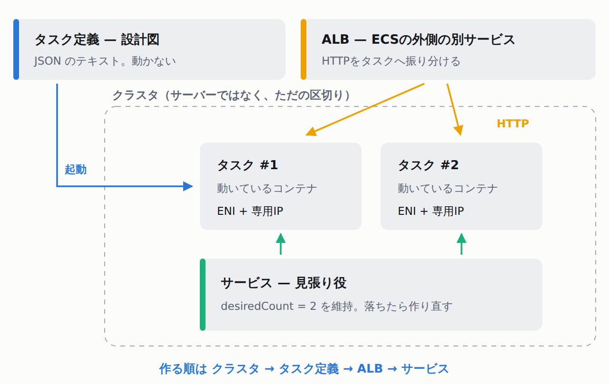

「コンテナを1個動かしたい」だけなのに、覚える言葉が4つ出てくる
ECSを調べ始めると、クラスタ・タスク定義・サービス・タスクという言葉が同時に出てきます。どれを最初に作るのかが分かりません。ここが最初の壁です。
先に用語だけ片付けます。知っている行は飛ばしてください。
- AWS。Amazon Web Services。サーバーやネットワークやデータベースを、自分で機械を買わずにインターネット越しに借りられるサービス群のこと。
- Amazon EC2。そのAWSで「仮想サーバーを1台借りる」サービス。OSの更新やディスクの管理は借りた側の仕事です。この記事では7章で比較相手として出てきます。
- コンテナ。アプリと、それが動くのに必要なライブラリ（アプリが借りて使う部品の集まり）・設定を1つにまとめて、どこでも同じように動かせるようにしたもの。
- コンテナイメージ。コンテナの元になる読み取り専用のファイル一式。レシピと料理の関係です。イメージがレシピ、コンテナが料理。イメージを作って動かす代表的なツールが Docker です。
- Amazon ECS。そのコンテナを「何個、どこで動かすか」をAWSが代わりに管理してくれるサービス。この管理のことをオーケストレーションと呼びます。
- AWS Fargate。サーバーを1台も用意せずにコンテナを動かせる仕組み。公式の言い方は
run containers without having to manage servers or clusters of Amazon EC2 instancesです。
では登場人物です。AWS公式ドキュメントの「What is Amazon Elastic Container Service?」に、4つの言葉の定義がそのまま並んでいます。ここが記事の骨格です。
Amazon ECS Developer Guide「What is Amazon Elastic Container Service?」— 原文
Task definition — The blueprint for the application. Cluster — The infrastructure your application runs on. Task — An application such as a batch job that performs work, and then stops. Service — A long running stateless application. （タスク定義＝アプリの設計図 / クラスタ＝アプリが動く土台 / タスク＝仕事をして終わるアプリ / サービス＝動き続けるアプリ）

| 登場人物 | 担当 | 実体は何か |
|---|---|---|
| クラスタ | タスクやサービスを入れておく区切り | 論理的なグループ。サーバーではない |
| タスク定義 | どのイメージを、CPUいくつ・メモリいくつで動かすか | JSONのテキストファイル |
| タスク | 実際に動いているコンテナのまとまり | タスク定義から起動した1個 |
| サービス | タスクを指定台数だけ維持し続ける | ECS内部の見張り役 |
| ALB | 外から来たHTTPを、生きているタスクへ振り分ける | ECSの外側にある別サービス |
作る順番は、この表の上から下です。クラスタ → タスク定義 → （ALB） → サービス。タスクはサービスが勝手に作るので、自分で作るボタンを押すことはほとんどありません。
この記事で「やっていないこと」を先に書きます
この記事の筆者の環境にはAWSアカウントも認証情報もありません。そのため次の操作は一切実行していません。実行していないものを、実行したかのようには書きません。
- ECSへのデプロイ操作。
create-cluster/register-task-definition/create-serviceのいずれも実行していません。 - タスクの起動、ALB経由のHTTPアクセス、ヘルスチェックの通過確認。していません。
terraform apply。していません。planまでです。docker build。この環境はDockerのデーモン（バックグラウンドで常駐して指示を受け付けるプログラム）が動いていないので、失敗します。
実行結果（docker build。デーモンが無い）
ERROR: failed to connect to the docker API at unix:///var/run/docker.sock; check if the path is correct and if the daemon is running: dial unix /var/run/docker.sock: connect: no such file or directory
代わりに使ったのは、認証情報が要らない操作だけです。AWS CLIの入力雛形（--generate-cli-skeleton）、CLIがローカルで行うパラメータ検証、CLI同梱のAPI定義ファイル、そして terraform validate と plan。ここから分かることは、思ったより多くありました。